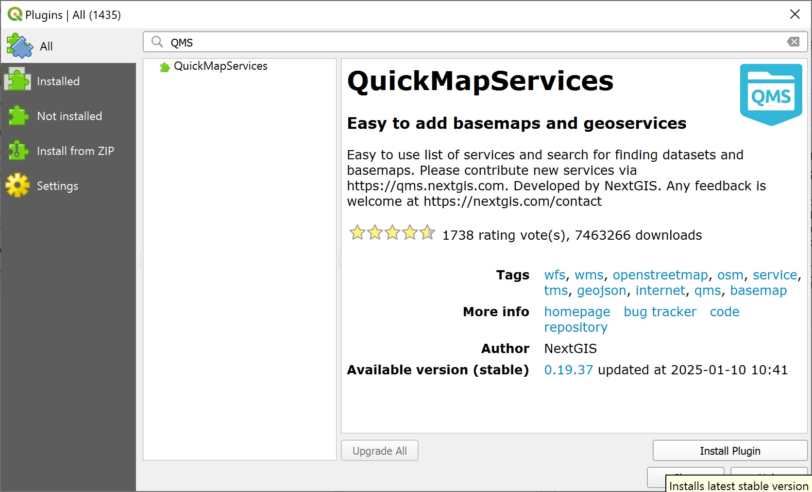
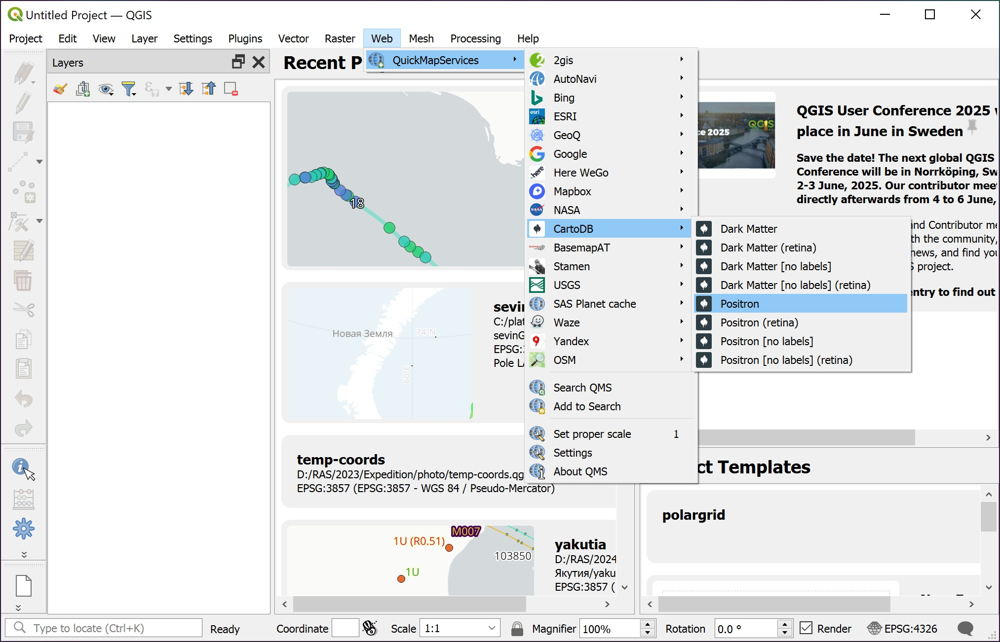
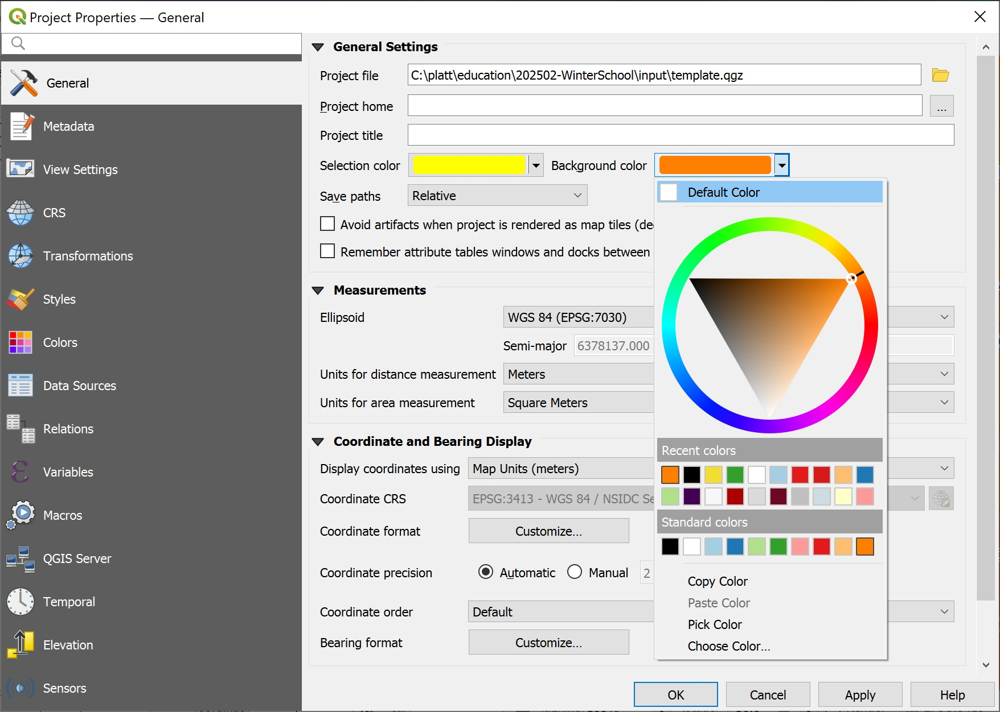
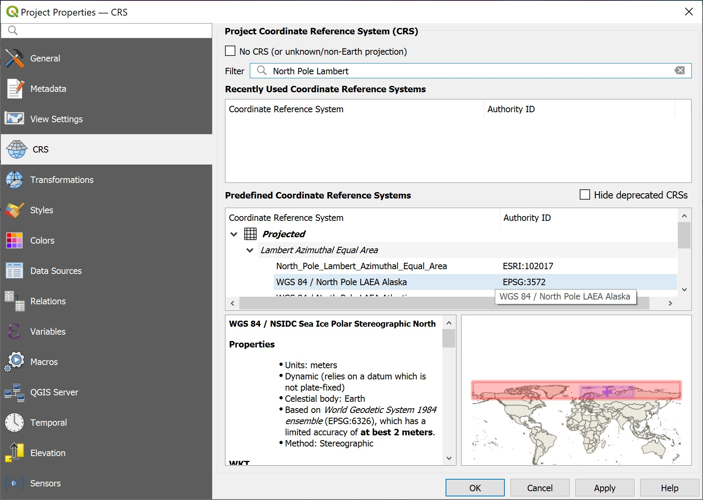
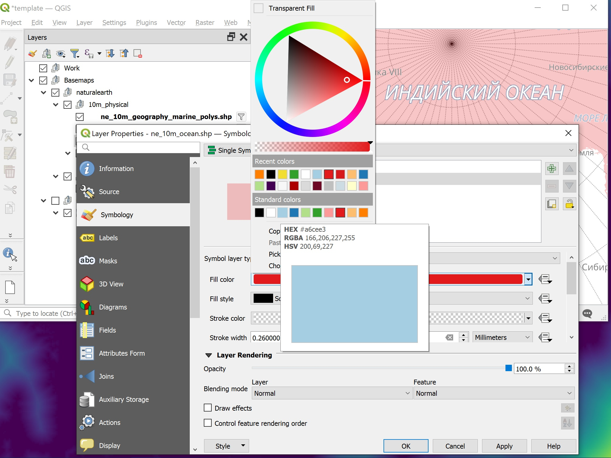
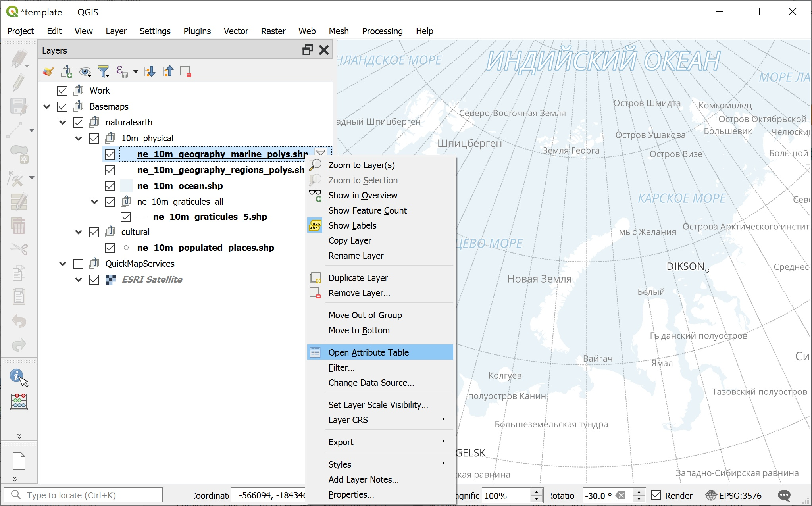
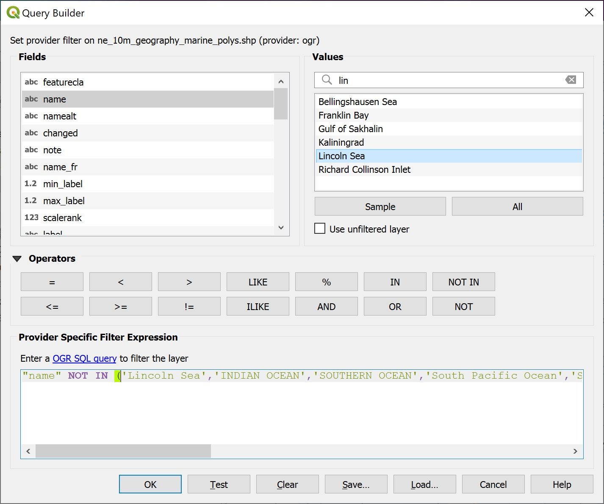
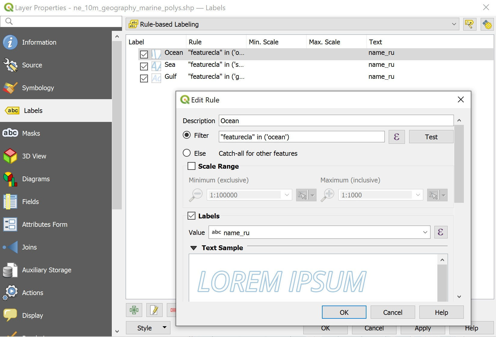
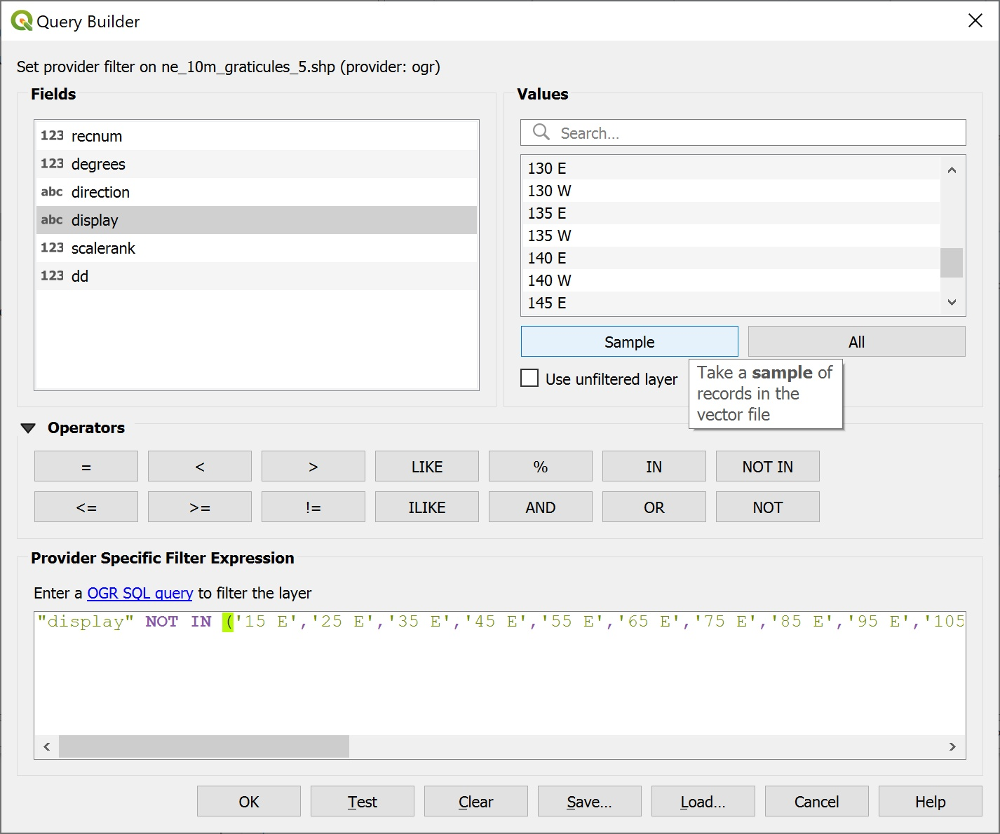
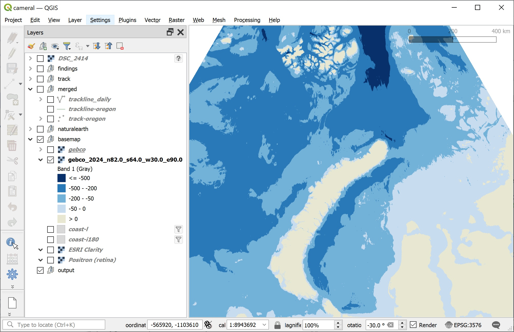

layout: true .toc.banner[ .shorttitle[ [ГИС аспирантура](break.html#home) ] ] --- name: home class: metadata customtitle middle left giphy .toc.sidebar.left-column[ .outline[ ## [Данные](#dataset) ## [Программы](#soft) ## [Попробовать](#before) ] ] .toc.mainbar.right-column.scrollable[ .authors[ .author[Никита Платонов] .institute[с.н.с. ИПЭЭ РАН] ] .title[ Общие вопросы, введение ] .subtitle[ ГИС технологии в биологических исследованиях ] .what[ Тема 01 ] .where[ ] .when[ .updated[Обновлено: 2026-02-13 11:13] ] ] --- # Организационные вопросы -- + Домашние задания выдаются раз в две недели на шесть дней со сдачей до 12:00 Мск (UTC+3) в четверг. При уважительной причине допускается сдача на неделю позже. Проверяются во второй половине среды и/или в четверг утром. Выносятся на обсуждение на занятии в четверг. -- + Домашние задания можно высылать как по почте, так и, если РКН не снизит скорости до нуля, в Telegram -- + В четверг вечером перекличка, кто собирается приходить в аудиторию в пятницу. Если никого не будет очно, то преподаватель оставляет за собой решение, откуда провести заниятие дистанционно. Если преподаватель предупреждает, если не сможет провести занятие в классе; в этом случае в класс приходить не надо. -- + Форма аттестации – зачет. Для зачета нужно сделать все домашние задания. Преподаватель может выдать индивидуальные задания, которые также будут учитываться для получения зачёта. --- name: dataset .toc.sidebar.left-column[ .outline[ ## [Данные](#dataset).fg[] ### [Для освоения](#dataset).fg[].bg[] ### [Об этих данных](#datasource).bg[] ## [Программы](#soft) ## [Попробовать](#before) ] ] .toc.mainbar.right-column.scrollable[ .header.broad[ Для освоения ] .fixprecode[ Экспедиция Арктического плавучего университета рейса 2023-2 <a name=cite-winterschool2025></a>([Платонов, 2025](#bib)). Перейти по DOI (Zenodo) и распаковать. Папка `input` должна быть в рабочей директории. ] ] --- name: datasource .toc.sidebar.left-column[ .outline[ ## [Данные](#dataset).fg[] ### [Для освоения](#dataset) ### [Об этих данных](#datasource).fg[] #### [Natural Earth](#datasource) <span class="bullet bullet-active">[•](#datasource)</span><span class="bullet mslide8m">[•](#Hd2c37)</span>.fg[].bg[] #### [OSM береговая линия](#osmdata).bg[] #### [GEBCO батиметрия](#download-gebco).bg[] ## [Программы](#soft) ## [Попробовать](#before) ] ] .toc.mainbar.right-column.scrollable[ .header.broad[ Natural Earth ] .fixprecode[ Для создания картографической подложки. <iframe src="https://www.naturalearthdata.com/downloads/" width="1330" height="700px" data-external="1"></iframe> ] ] --- name: Hd2c37 .toc.sidebar.left-column[ .outline[ ## [Данные](#dataset).fg[] ### [Для освоения](#dataset) ### [Об этих данных](#datasource).fg[] #### [Natural Earth](#datasource) <span class="bullet bullet">[•](#datasource)</span><span class="bullet bullet-active">[•](#Hd2c37)</span>.fg[].bg[] #### [OSM береговая линия](#osmdata).bg[] #### [GEBCO батиметрия](#download-gebco).bg[] ## [Программы](#soft) ## [Попробовать](#before) ] ] .toc.mainbar.right-column.scrollable[ .header.broad[ Natural Earth ] .fixprecode[ .font97[ + [Natural Earth World GIS Data](https://www.naturalearthdata.com/) + [Downloads](https://www.naturalearthdata.com/downloads) + [Download all vector themes as SHP](https://naciscdn.org/naturalearth/packages/natural_earth_vector.zip) - прямая ссылка на скачивание. В наборе ([Платонов, 2025](#bib)) используется векторные данные, приведенные ниже. Их скачивать не обязательно. + [10m_physical/ne_10m_graticules_all/ne_10m_graticules_5.shp](https://naciscdn.org/naturalearth/10m/physical/ne_10m_graticules_5.zip) - линии долгот-широт через 5 градусов, для помощи в ориентации на север + [10m_physical/ne_10m_ocean.shp](https://naciscdn.org/naturalearth/10m/physical/ne_10m_ocean.zip) - полигоны с морями и океанами, разделить сушу и море + [10m_physical/ne_10m_geography_regions_polys.shp](https://naciscdn.org/naturalearth/10m/physical/ne_10m_geography_regions_polys.zip) - полигоны для подписей сухопутных названий + [10m_physical/ne_10m_geography_marine_polys.shp](https://naciscdn.org/naturalearth/10m/physical/ne_10m_geography_marine_polys.zip) - полигоны для подписей морей + [10m_cultural/ne_10m_populated_places.shp](https://naciscdn.org/naturalearth/10m/cultural/ne_10m_populated_places.zip) - точки населенных пунктов ] ] ] --- name: osmdata .toc.sidebar.left-column[ .outline[ ## [Данные](#dataset).fg[] ### [Для освоения](#dataset) ### [Об этих данных](#datasource).fg[] #### [Natural Earth](#datasource).bg[] #### [OSM береговая линия](#osmdata).fg[].bg[] #### [GEBCO батиметрия](#download-gebco).bg[] ## [Программы](#soft) ## [Попробовать](#before) ] ] .toc.mainbar.right-column.scrollable[ .header.broad[ OSM береговая линия ] .fixprecode[ Эти данные для более детального отображения береговой линии по сравнению с Natural Earth. + [Data Derived from OpenStreetMap for Download](https://osmdata.openstreetmap.de/) + [Land Polygons](https://osmdata.openstreetmap.de/data/land-polygons.html) + [Download large simplified polygons](https://osmdata.openstreetmap.de/download/simplified-land-polygons-complete-3857.zip). <iframe src="https://osmdata.openstreetmap.de/" width="1330" height="700px" data-external="1"></iframe> ] ] --- name: download-gebco .toc.sidebar.left-column[ .outline[ ## [Данные](#dataset).fg[] ### [Для освоения](#dataset) ### [Об этих данных](#datasource).fg[] #### [Natural Earth](#datasource).bg[] #### [OSM береговая линия](#osmdata).bg[] #### [GEBCO батиметрия](#download-gebco).fg[].bg[] ## [Программы](#soft) ## [Попробовать](#before) ] ] .toc.mainbar.right-column.scrollable[ .header.broad[ GEBCO батиметрия ] .fixprecode[ + https://www.gebco.net/ + [Gridded Bathymetry Data](https://www.gebco.net/data_and_products/gridded_bathymetry_data/) + [Download data for user-defined areas](https://www.gebco.net/data_and_products/gridded_bathymetry_data/#area) + [Application](https://download.gebco.net/). Откройте в новой вкладке по размеру экрана браузера. Полученные с этого источника данные включены в набор ([Платонов, 2025](#bib)) с уменьшенным масштабом. <iframe src="https://download.gebco.net/" width="1330" height="700px" data-external="1"></iframe> ] ] --- name: soft .toc.sidebar.left-column[ .outline[ ## [Данные](#dataset) ## [Программы](#soft).fg[] ### [QGIS](#soft).fg[] #### [Ядро](#soft) <span class="bullet bullet-active">[•](#soft)</span><span class="bullet mslide14m">[•](#Hceeeb)</span>.fg[].bg[] #### [Расширения](#soft-qgis-plugins).bg[] ### [R](#Hda8c0) ## [Попробовать](#before) ] ] .toc.mainbar.right-column.scrollable[ .header.broad[ Ядро ] .fixprecode[ <!-- [QGIS Web](https://qgis.org/en/site/) --> Сайт https://qgis.org/. Находим "Download" <iframe src="https://qgis.org/" width="1330" height="700px" data-external="1"></iframe> ] ] --- https://qgis.org/en/site/forusers/download.html name: Hceeeb .toc.sidebar.left-column[ .outline[ ## [Данные](#dataset) ## [Программы](#soft).fg[] ### [QGIS](#soft).fg[] #### [Ядро](#soft) <span class="bullet bullet">[•](#soft)</span><span class="bullet bullet-active">[•](#Hceeeb)</span>.fg[].bg[] #### [Расширения](#soft-qgis-plugins).bg[] ### [R](#Hda8c0) ## [Попробовать](#before) ] ] .toc.mainbar.right-column.scrollable[ .header.broad[ Ядро ] .fixprecode[ <iframe src="https://qgis.org/en/site/forusers/download.html" width="1330" height="700px" data-external="1"></iframe> Прямые ссылки для скачивания установочного файла [QGIS 3.40 LTR](https://download.qgis.org//downloads/QGIS-OSGeo4W-3.40.15-1.msi) и [QGIS 3.44 Latest](https://download.qgis.org//downloads/QGIS-OSGeo4W-3.44.7-1.msi) под Windows (актуальны на 12 февраля 2026 г.). ] ] --- name: soft-qgis-plugins .toc.sidebar.left-column[ .outline[ ## [Данные](#dataset) ## [Программы](#soft).fg[] ### [QGIS](#soft).fg[] #### [Ядро](#soft).bg[] #### [Расширения](#soft-qgis-plugins).fg[].bg[] ##### [QuickMapServices](#H82ce5) ### [R](#Hda8c0) ## [Попробовать](#before) ] ] .toc.mainbar.right-column.scrollable[ .header.broad[ Расширения ] .fixprecode[ https://plugins.qgis.org/ <iframe src="https://plugins.qgis.org/plugins/?sort=-downloads" width="1330" height="700px" data-external="1"></iframe> ] ] --- name: H82ce5 .toc.sidebar.left-column[ .outline[ ## [Данные](#dataset) ## [Программы](#soft).fg[] ### [QGIS](#soft).fg[] #### [Ядро](#soft) #### [Расширения](#soft-qgis-plugins).fg[] ##### [QuickMapServices](#H82ce5) <span class="bullet bullet-active">[•](#H82ce5)</span><span class="bullet mslide17m">[•](#H57e7e)</span><span class="bullet mslide18m">[•](#Hc758f)</span><span class="bullet mslide19m">[•](#Hb05fc)</span><span class="bullet mslide20m">[•](#He2ae2)</span><span class="bullet mslide21m">[•](#H95a91)</span>.fg[].bg[] ### [R](#Hda8c0) ## [Попробовать](#before) ] ] .toc.mainbar.right-column.scrollable[ .header.broad[ QuickMapServices ] .fixprecode[ [Страница проекта](https://plugins.qgis.org/plugins/quick_map_services/) <iframe src="https://plugins.qgis.org/plugins/quick_map_services/" width="1330" height="700px" data-external="1"></iframe> Установить в QGIS ] ] --- name: H57e7e .toc.sidebar.left-column[ .outline[ ## [Данные](#dataset) ## [Программы](#soft).fg[] ### [QGIS](#soft).fg[] #### [Ядро](#soft) #### [Расширения](#soft-qgis-plugins).fg[] ##### [QuickMapServices](#H82ce5) <span class="bullet bullet">[•](#H82ce5)</span><span class="bullet bullet-active">[•](#H57e7e)</span><span class="bullet mslide18m">[•](#Hc758f)</span><span class="bullet mslide19m">[•](#Hb05fc)</span><span class="bullet mslide20m">[•](#He2ae2)</span><span class="bullet mslide21m">[•](#H95a91)</span>.fg[].bg[] ### [R](#Hda8c0) ## [Попробовать](#before) ] ] .toc.mainbar.right-column.scrollable[ .header.broad[ QuickMapServices ] .fixprecode[ <img src="assets/lesson01/PluginsMenu.jpg" alt="" width="1330" height="670" contain style="display: block; margin: auto auto auto 0;" /> ] ] --- name: Hc758f .toc.sidebar.left-column[ .outline[ ## [Данные](#dataset) ## [Программы](#soft).fg[] ### [QGIS](#soft).fg[] #### [Ядро](#soft) #### [Расширения](#soft-qgis-plugins).fg[] ##### [QuickMapServices](#H82ce5) <span class="bullet bullet">[•](#H82ce5)</span><span class="bullet bullet">[•](#H57e7e)</span><span class="bullet bullet-active">[•](#Hc758f)</span><span class="bullet mslide19m">[•](#Hb05fc)</span><span class="bullet mslide20m">[•](#He2ae2)</span><span class="bullet mslide21m">[•](#H95a91)</span>.fg[].bg[] ### [R](#Hda8c0) ## [Попробовать](#before) ] ] .toc.mainbar.right-column.scrollable[ .header.broad[ QuickMapServices ] .fixprecode[ <img src="assets/lesson01/PluginsList.jpg" alt="" width="1330" height="670" contain style="display: block; margin: auto auto auto 0;" /> ] ] --- name: Hb05fc .toc.sidebar.left-column[ .outline[ ## [Данные](#dataset) ## [Программы](#soft).fg[] ### [QGIS](#soft).fg[] #### [Ядро](#soft) #### [Расширения](#soft-qgis-plugins).fg[] ##### [QuickMapServices](#H82ce5) <span class="bullet bullet">[•](#H82ce5)</span><span class="bullet bullet">[•](#H57e7e)</span><span class="bullet bullet">[•](#Hc758f)</span><span class="bullet bullet-active">[•](#Hb05fc)</span><span class="bullet mslide20m">[•](#He2ae2)</span><span class="bullet mslide21m">[•](#H95a91)</span>.fg[].bg[] ### [R](#Hda8c0) ## [Попробовать](#before) ] ] .toc.mainbar.right-column.scrollable[ .header.broad[ QuickMapServices ] .fixprecode[  ] ] --- name: He2ae2 .toc.sidebar.left-column[ .outline[ ## [Данные](#dataset) ## [Программы](#soft).fg[] ### [QGIS](#soft).fg[] #### [Ядро](#soft) #### [Расширения](#soft-qgis-plugins).fg[] ##### [QuickMapServices](#H82ce5) <span class="bullet bullet">[•](#H82ce5)</span><span class="bullet bullet">[•](#H57e7e)</span><span class="bullet bullet">[•](#Hc758f)</span><span class="bullet bullet">[•](#Hb05fc)</span><span class="bullet bullet-active">[•](#He2ae2)</span><span class="bullet mslide21m">[•](#H95a91)</span>.fg[].bg[] ### [R](#Hda8c0) ## [Попробовать](#before) ] ] .toc.mainbar.right-column.scrollable[ .header.broad[ QuickMapServices ] .fixprecode[ Получить набор готовых сервисов <img src="assets/lesson01/PluginsSettings.jpg" alt="" width="1330" height="625" contain style="display: block; margin: auto auto auto 0;" /> ] ] --- name: H95a91 .toc.sidebar.left-column[ .outline[ ## [Данные](#dataset) ## [Программы](#soft).fg[] ### [QGIS](#soft).fg[] #### [Ядро](#soft) #### [Расширения](#soft-qgis-plugins).fg[] ##### [QuickMapServices](#H82ce5) <span class="bullet bullet">[•](#H82ce5)</span><span class="bullet bullet">[•](#H57e7e)</span><span class="bullet bullet">[•](#Hc758f)</span><span class="bullet bullet">[•](#Hb05fc)</span><span class="bullet bullet">[•](#He2ae2)</span><span class="bullet bullet-active">[•](#H95a91)</span>.fg[].bg[] ### [R](#Hda8c0) ## [Попробовать](#before) ] ] .toc.mainbar.right-column.scrollable[ .header.broad[ QuickMapServices ] .fixprecode[  ] ] --- name: Hda8c0 .toc.sidebar.left-column[ .outline[ ## [Данные](#dataset) ## [Программы](#soft).fg[] ### [QGIS](#soft).bg[] ### [R](#Hda8c0).fg[].bg[] #### [Ядро](#Hce457) #### [Пакеты](#H927ce) ## [Попробовать](#before) ] ] .toc.mainbar.right-column.scrollable[ .header.broad[ R ] .fixprecode[ https://www.r-project.org/. Выбираем работающее [зеркало](https://mirror.truenetwork.ru/CRAN//mirrors.html) (mirror) – сервер для скачивания. Возможно, повезёт найти работающее с приемлемой скоростью загрузки данных. На 13 февраля 2026 г., возможно, это https://mirror.truenetwork.ru/CRAN/. <iframe src="https://mirror.truenetwork.ru/CRAN/" width="1330" height="700px" data-external="1"></iframe> ] ] --- name: Hce457 .toc.sidebar.left-column[ .outline[ ## [Данные](#dataset) ## [Программы](#soft).fg[] ### [QGIS](#soft) ### [R](#Hda8c0).fg[] #### [Ядро](#Hce457).fg[].bg[] #### [Пакеты](#H927ce).bg[] ## [Попробовать](#before) ] ] .toc.mainbar.right-column.scrollable[ .header.broad[ Ядро ] .fixprecode[ Скомпилированное ядро – это [R Binary](https://mirror.truenetwork.ru/CRAN//banner.shtml) <iframe src="https://mirror.truenetwork.ru/CRAN//banner.shtml" width="1330" height="700px" data-external="1"></iframe> ] ] --- name: H927ce .toc.sidebar.left-column[ .outline[ ## [Данные](#dataset) ## [Программы](#soft).fg[] ### [QGIS](#soft) ### [R](#Hda8c0).fg[] #### [Ядро](#Hce457).bg[] #### [Пакеты](#H927ce) <span class="bullet bullet-active">[•](#H927ce)</span><span class="bullet mslide25m">[•](#H92c4d)</span>.fg[].bg[] ## [Попробовать](#before) ] ] .toc.mainbar.right-column.scrollable[ .header.broad[ Пакеты ] .fixprecode[ Пакеты, загружаемые для работы как библиотеки – [Packages](https://mirror.truenetwork.ru/CRAN//web/packages) <iframe src="https://mirror.truenetwork.ru/CRAN//web/packages" width="1330" height="700px" data-external="1"></iframe> ] ] --- name: H92c4d .toc.sidebar.left-column[ .outline[ ## [Данные](#dataset) ## [Программы](#soft).fg[] ### [QGIS](#soft) ### [R](#Hda8c0).fg[] #### [Ядро](#Hce457).bg[] #### [Пакеты](#H927ce) <span class="bullet bullet">[•](#H927ce)</span><span class="bullet bullet-active">[•](#H92c4d)</span>.fg[].bg[] ## [Попробовать](#before) ] ] .toc.mainbar.right-column.scrollable[ .header.broad[ Пакеты ] .fixprecode[ [Отображение всех пакетов](https://mirror.truenetwork.ru/CRAN//web/packages/available_packages_by_name.html) <iframe src="https://mirror.truenetwork.ru/CRAN//web/packages/available_packages_by_name.html" width="1330" height="700px" data-external="1"></iframe> ] ] --- name: before .toc.sidebar.left-column[ .outline[ ## [Данные](#dataset) ## [Программы](#soft) ## [Попробовать](#before).fg[] ### [QGIS](#before).fg[] #### [Открыть проект](#before) <span class="bullet bullet-active">[•](#before)</span><span class="bullet mslide29m">[•](#H9b729)</span>.fg[].bg[] #### [Выполнить задание](#H56af5).bg[] #### [По шагам](#steps).bg[] #### [Cвои данные](#H886c8).bg[] ### [R](#H630b8) ] ] .toc.mainbar.right-column.scrollable[ .header.broad[ Открыть проект ] .fixprecode[ <img src="assets/lesson01/Before00-OpenProject.jpg" alt="" width="1330" height="700" contain style="display: block; margin: auto auto auto 0;" /> Указать путь к проекту `template.qgz` из набора ([Платонов, 2025](#bib)). ] ] --- name: H9b729 .toc.sidebar.left-column[ .outline[ ## [Данные](#dataset) ## [Программы](#soft) ## [Попробовать](#before).fg[] ### [QGIS](#before).fg[] #### [Открыть проект](#before) <span class="bullet bullet">[•](#before)</span><span class="bullet bullet-active">[•](#H9b729)</span>.fg[].bg[] #### [Выполнить задание](#H56af5).bg[] #### [По шагам](#steps).bg[] #### [Cвои данные](#H886c8).bg[] ### [R](#H630b8) ] ] .toc.mainbar.right-column.scrollable[ .header.broad[ Открыть проект ] .fixprecode[ <img src="assets/lesson01/Before01-OrangeProject.jpg" alt="" width="1330" height="592" contain style="display: block; margin: auto auto auto 0;" /> Возможное оранжевое предупреждение проигнорировать и закрыть. ] ] --- name: H56af5 .toc.sidebar.left-column[ .outline[ ## [Данные](#dataset) ## [Программы](#soft) ## [Попробовать](#before).fg[] ### [QGIS](#before).fg[] #### [Открыть проект](#before).bg[] #### [Выполнить задание](#H56af5) <span class="bullet bullet-active">[•](#H56af5)</span><span class="bullet mslide31m">[•](#H8cb22)</span>.fg[].bg[] #### [По шагам](#steps).bg[] #### [Cвои данные](#H886c8).bg[] ### [R](#H630b8) ] ] .toc.mainbar.right-column.scrollable[ .header.broad[ Выполнить задание ] .fixprecode[ Отредактировать отображение с красного на голубой <img src="assets/lesson01/Before18-BlueProject.jpg" alt="" width="1330" height="600" contain style="display: block; margin: auto auto auto 0;" /> ] ] --- name: H8cb22 .toc.sidebar.left-column[ .outline[ ## [Данные](#dataset) ## [Программы](#soft) ## [Попробовать](#before).fg[] ### [QGIS](#before).fg[] #### [Открыть проект](#before).bg[] #### [Выполнить задание](#H56af5) <span class="bullet bullet">[•](#H56af5)</span><span class="bullet bullet-active">[•](#H8cb22)</span>.fg[].bg[] #### [По шагам](#steps).bg[] #### [Cвои данные](#H886c8).bg[] ### [R](#H630b8) ] ] .toc.mainbar.right-column.scrollable[ .header.broad[ Выполнить задание ] .fixprecode[ + Изменить проекцию проекта на азимутальную равноплощадную Ламберта (EPSG:3576) + Скорректировать вращением направление на север + Моря сделать голубыми, сушу не раскрашивать + Названия населенных пунктов сделать русскоязычными + Убрать встречающиеся названия морей и регионов из южного полушария + Добавить масштабную линейку ] ] --- name: steps .toc.sidebar.left-column[ .outline[ ## [Данные](#dataset) ## [Программы](#soft) ## [Попробовать](#before).fg[] ### [QGIS](#before).fg[] #### [Открыть проект](#before) #### [Выполнить задание](#H56af5) #### [По шагам](#steps).fg[] ##### [Свойства проекта](#steps) <span class="bullet bullet-active">[•](#steps)</span><span class="bullet mslide34m">[•](#Hfcd8d)</span><span class="bullet mslide35m">[•](#H8bdfe)</span><span class="bullet mslide36m">[•](#H12d6b)</span>.fg[].bg[] ##### [Cвойства слоя](#H51a88).bg[] ##### [Раскраска слоя](#H1747f).bg[] ##### [Таблица атрибутов](#Hf6957).bg[] ##### [Извление названий](#Hcb24d).bg[] ##### [Лишние названия](#H18f49).bg[] ##### [Украшательства](#H87dd6).bg[] ##### [Прореживание долгот](#He10c0).bg[] ##### [Масштабная линейка](#H5ceba).bg[] ##### [Результат](#Hd5bfd).bg[] #### [Cвои данные](#H886c8) ### [R](#H630b8) ] ] .toc.mainbar.right-column.scrollable[ .header.broad[ Свойства проекта ] .fixprecode[ <img src="assets/lesson01/Before02-ProjectProperties.jpg" alt="" width="1330" height="672" contain style="display: block; margin: auto auto auto 0;" /> ] ] --- name: Hfcd8d .toc.sidebar.left-column[ .outline[ ## [Данные](#dataset) ## [Программы](#soft) ## [Попробовать](#before).fg[] ### [QGIS](#before).fg[] #### [Открыть проект](#before) #### [Выполнить задание](#H56af5) #### [По шагам](#steps).fg[] ##### [Свойства проекта](#steps) <span class="bullet bullet">[•](#steps)</span><span class="bullet bullet-active">[•](#Hfcd8d)</span><span class="bullet mslide35m">[•](#H8bdfe)</span><span class="bullet mslide36m">[•](#H12d6b)</span>.fg[].bg[] ##### [Cвойства слоя](#H51a88).bg[] ##### [Раскраска слоя](#H1747f).bg[] ##### [Таблица атрибутов](#Hf6957).bg[] ##### [Извление названий](#Hcb24d).bg[] ##### [Лишние названия](#H18f49).bg[] ##### [Украшательства](#H87dd6).bg[] ##### [Прореживание долгот](#He10c0).bg[] ##### [Масштабная линейка](#H5ceba).bg[] ##### [Результат](#Hd5bfd).bg[] #### [Cвои данные](#H886c8) ### [R](#H630b8) ] ] .toc.mainbar.right-column.scrollable[ .header.broad[ Свойства проекта ] .fixprecode[ Заменить цвет фона на белый, чтобы убрать красноту отображения.  ] ] --- name: H8bdfe .toc.sidebar.left-column[ .outline[ ## [Данные](#dataset) ## [Программы](#soft) ## [Попробовать](#before).fg[] ### [QGIS](#before).fg[] #### [Открыть проект](#before) #### [Выполнить задание](#H56af5) #### [По шагам](#steps).fg[] ##### [Свойства проекта](#steps) <span class="bullet bullet">[•](#steps)</span><span class="bullet bullet">[•](#Hfcd8d)</span><span class="bullet bullet-active">[•](#H8bdfe)</span><span class="bullet mslide36m">[•](#H12d6b)</span>.fg[].bg[] ##### [Cвойства слоя](#H51a88).bg[] ##### [Раскраска слоя](#H1747f).bg[] ##### [Таблица атрибутов](#Hf6957).bg[] ##### [Извление названий](#Hcb24d).bg[] ##### [Лишние названия](#H18f49).bg[] ##### [Украшательства](#H87dd6).bg[] ##### [Прореживание долгот](#He10c0).bg[] ##### [Масштабная линейка](#H5ceba).bg[] ##### [Результат](#Hd5bfd).bg[] #### [Cвои данные](#H886c8) ### [R](#H630b8) ] ] .toc.mainbar.right-column.scrollable[ .header.broad[ Свойства проекта ] .fixprecode[ Изменить проекцию проекта на равноплощадную азимутальную проекцию Ламберта (EPSG:3576)  ] ] --- name: H12d6b .toc.sidebar.left-column[ .outline[ ## [Данные](#dataset) ## [Программы](#soft) ## [Попробовать](#before).fg[] ### [QGIS](#before).fg[] #### [Открыть проект](#before) #### [Выполнить задание](#H56af5) #### [По шагам](#steps).fg[] ##### [Свойства проекта](#steps) <span class="bullet bullet">[•](#steps)</span><span class="bullet bullet">[•](#Hfcd8d)</span><span class="bullet bullet">[•](#H8bdfe)</span><span class="bullet bullet-active">[•](#H12d6b)</span>.fg[].bg[] ##### [Cвойства слоя](#H51a88).bg[] ##### [Раскраска слоя](#H1747f).bg[] ##### [Таблица атрибутов](#Hf6957).bg[] ##### [Извление названий](#Hcb24d).bg[] ##### [Лишние названия](#H18f49).bg[] ##### [Украшательства](#H87dd6).bg[] ##### [Прореживание долгот](#He10c0).bg[] ##### [Масштабная линейка](#H5ceba).bg[] ##### [Результат](#Hd5bfd).bg[] #### [Cвои данные](#H886c8) ### [R](#H630b8) ] ] .toc.mainbar.right-column.scrollable[ .header.broad[ Свойства проекта ] .fixprecode[ В строке состояния указать, на сколько градусов повернуть, чтобы меридиан в центре отображения был направлен вертикально <img src="assets/lesson01/Before05-StatusBar.jpg" alt="" width="1330" height="672" aspect style="display: block; margin: auto auto auto 0;" /> ] ] --- name: H51a88 .toc.sidebar.left-column[ .outline[ ## [Данные](#dataset) ## [Программы](#soft) ## [Попробовать](#before).fg[] ### [QGIS](#before).fg[] #### [Открыть проект](#before) #### [Выполнить задание](#H56af5) #### [По шагам](#steps).fg[] ##### [Свойства проекта](#steps).bg[] ##### [Cвойства слоя](#H51a88).fg[].bg[] ##### [Раскраска слоя](#H1747f).bg[] ##### [Таблица атрибутов](#Hf6957).bg[] ##### [Извление названий](#Hcb24d).bg[] ##### [Лишние названия](#H18f49).bg[] ##### [Украшательства](#H87dd6).bg[] ##### [Прореживание долгот](#He10c0).bg[] ##### [Масштабная линейка](#H5ceba).bg[] ##### [Результат](#Hd5bfd).bg[] #### [Cвои данные](#H886c8) ### [R](#H630b8) ] ] .toc.mainbar.right-column.scrollable[ .header.broad[ Cвойства слоя ] .fixprecode[ <img src="assets/lesson01/Before06-LayerProperties.jpg" alt="" width="1330" height="672" contain style="display: block; margin: auto auto auto 0;" /> ] ] --- name: H1747f .toc.sidebar.left-column[ .outline[ ## [Данные](#dataset) ## [Программы](#soft) ## [Попробовать](#before).fg[] ### [QGIS](#before).fg[] #### [Открыть проект](#before) #### [Выполнить задание](#H56af5) #### [По шагам](#steps).fg[] ##### [Свойства проекта](#steps).bg[] ##### [Cвойства слоя](#H51a88).bg[] ##### [Раскраска слоя](#H1747f).fg[].bg[] ##### [Таблица атрибутов](#Hf6957).bg[] ##### [Извление названий](#Hcb24d).bg[] ##### [Лишние названия](#H18f49).bg[] ##### [Украшательства](#H87dd6).bg[] ##### [Прореживание долгот](#He10c0).bg[] ##### [Масштабная линейка](#H5ceba).bg[] ##### [Результат](#Hd5bfd).bg[] #### [Cвои данные](#H886c8) ### [R](#H630b8) ] ] .toc.mainbar.right-column.scrollable[ .header.broad[ Раскраска слоя ] .fixprecode[ Изменить красный цвет океана на голубой. Можно изменить значение прозрачности слоя.  ] ] --- name: Hf6957 .toc.sidebar.left-column[ .outline[ ## [Данные](#dataset) ## [Программы](#soft) ## [Попробовать](#before).fg[] ### [QGIS](#before).fg[] #### [Открыть проект](#before) #### [Выполнить задание](#H56af5) #### [По шагам](#steps).fg[] ##### [Свойства проекта](#steps).bg[] ##### [Cвойства слоя](#H51a88).bg[] ##### [Раскраска слоя](#H1747f).bg[] ##### [Таблица атрибутов](#Hf6957) <span class="bullet bullet-active">[•](#Hf6957)</span><span class="bullet mslide40m">[•](#Hb4f48)</span>.fg[].bg[] ##### [Извление названий](#Hcb24d).bg[] ##### [Лишние названия](#H18f49).bg[] ##### [Украшательства](#H87dd6).bg[] ##### [Прореживание долгот](#He10c0).bg[] ##### [Масштабная линейка](#H5ceba).bg[] ##### [Результат](#Hd5bfd).bg[] #### [Cвои данные](#H886c8) ### [R](#H630b8) ] ] .toc.mainbar.right-column.scrollable[ .header.broad[ Таблица атрибутов ] .fixprecode[  ] ] --- name: Hb4f48 .toc.sidebar.left-column[ .outline[ ## [Данные](#dataset) ## [Программы](#soft) ## [Попробовать](#before).fg[] ### [QGIS](#before).fg[] #### [Открыть проект](#before) #### [Выполнить задание](#H56af5) #### [По шагам](#steps).fg[] ##### [Свойства проекта](#steps).bg[] ##### [Cвойства слоя](#H51a88).bg[] ##### [Раскраска слоя](#H1747f).bg[] ##### [Таблица атрибутов](#Hf6957) <span class="bullet bullet">[•](#Hf6957)</span><span class="bullet bullet-active">[•](#Hb4f48)</span>.fg[].bg[] ##### [Извление названий](#Hcb24d).bg[] ##### [Лишние названия](#H18f49).bg[] ##### [Украшательства](#H87dd6).bg[] ##### [Прореживание долгот](#He10c0).bg[] ##### [Масштабная линейка](#H5ceba).bg[] ##### [Результат](#Hd5bfd).bg[] #### [Cвои данные](#H886c8) ### [R](#H630b8) ] ] .toc.mainbar.right-column.scrollable[ .header.broad[ Таблица атрибутов ] .fixprecode[ Это обычная таблица, как в Excel, каждая строка связана с геометрией пространственного объекта. <img src="assets/lesson01/BeforeX2-AttributeTable.jpg" alt="" width="1330" height="1594" contain style="display: block; margin: auto auto auto 0;" /> ] ] --- name: Hcb24d .toc.sidebar.left-column[ .outline[ ## [Данные](#dataset) ## [Программы](#soft) ## [Попробовать](#before).fg[] ### [QGIS](#before).fg[] #### [Открыть проект](#before) #### [Выполнить задание](#H56af5) #### [По шагам](#steps).fg[] ##### [Свойства проекта](#steps).bg[] ##### [Cвойства слоя](#H51a88).bg[] ##### [Раскраска слоя](#H1747f).bg[] ##### [Таблица атрибутов](#Hf6957).bg[] ##### [Извление названий](#Hcb24d).fg[].bg[] ##### [Лишние названия](#H18f49).bg[] ##### [Украшательства](#H87dd6).bg[] ##### [Прореживание долгот](#He10c0).bg[] ##### [Масштабная линейка](#H5ceba).bg[] ##### [Результат](#Hd5bfd).bg[] #### [Cвои данные](#H886c8) ### [R](#H630b8) ] ] .toc.mainbar.right-column.scrollable[ .header.broad[ Извление названий ] .fixprecode[ Изменить англоязычные названия населённых пунктов на русскоязычные. <img src="assets/lesson01/Before08-LayerLabels.jpg" alt="" width="1330" height="1594" contain style="display: block; margin: auto auto auto 0;" /> ] ] --- name: H18f49 .toc.sidebar.left-column[ .outline[ ## [Данные](#dataset) ## [Программы](#soft) ## [Попробовать](#before).fg[] ### [QGIS](#before).fg[] #### [Открыть проект](#before) #### [Выполнить задание](#H56af5) #### [По шагам](#steps).fg[] ##### [Свойства проекта](#steps).bg[] ##### [Cвойства слоя](#H51a88).bg[] ##### [Раскраска слоя](#H1747f).bg[] ##### [Таблица атрибутов](#Hf6957).bg[] ##### [Извление названий](#Hcb24d).bg[] ##### [Лишние названия](#H18f49) <span class="bullet bullet-active">[•](#H18f49)</span><span class="bullet mslide43m">[•](#H2dfdd)</span><span class="bullet mslide44m">[•](#Hb3994)</span><span class="bullet mslide45m">[•](#Hc49e7)</span>.fg[].bg[] ##### [Украшательства](#H87dd6).bg[] ##### [Прореживание долгот](#He10c0).bg[] ##### [Масштабная линейка](#H5ceba).bg[] ##### [Результат](#Hd5bfd).bg[] #### [Cвои данные](#H886c8) ### [R](#H630b8) ] ] .toc.mainbar.right-column.scrollable[ .header.broad[ Лишние названия ] .fixprecode[ Убрать появляющиеся подписи из южного полушария фильтрацией исключением. <img src="assets/lesson01/Before09-LayerFilter.jpg" alt="" width="1330" height="1594" contain style="display: block; margin: auto auto auto 0;" /> ] ] --- name: H2dfdd .toc.sidebar.left-column[ .outline[ ## [Данные](#dataset) ## [Программы](#soft) ## [Попробовать](#before).fg[] ### [QGIS](#before).fg[] #### [Открыть проект](#before) #### [Выполнить задание](#H56af5) #### [По шагам](#steps).fg[] ##### [Свойства проекта](#steps).bg[] ##### [Cвойства слоя](#H51a88).bg[] ##### [Раскраска слоя](#H1747f).bg[] ##### [Таблица атрибутов](#Hf6957).bg[] ##### [Извление названий](#Hcb24d).bg[] ##### [Лишние названия](#H18f49) <span class="bullet bullet">[•](#H18f49)</span><span class="bullet bullet-active">[•](#H2dfdd)</span><span class="bullet mslide44m">[•](#Hb3994)</span><span class="bullet mslide45m">[•](#Hc49e7)</span>.fg[].bg[] ##### [Украшательства](#H87dd6).bg[] ##### [Прореживание долгот](#He10c0).bg[] ##### [Масштабная линейка](#H5ceba).bg[] ##### [Результат](#Hd5bfd).bg[] #### [Cвои данные](#H886c8) ### [R](#H630b8) ] ] .toc.mainbar.right-column.scrollable[ .header.broad[ Лишние названия ] .fixprecode[ Для морей в таблице атрибутов нет столбца по региону, поэтому фильтрация напрямую.  ] ] --- name: Hb3994 .toc.sidebar.left-column[ .outline[ ## [Данные](#dataset) ## [Программы](#soft) ## [Попробовать](#before).fg[] ### [QGIS](#before).fg[] #### [Открыть проект](#before) #### [Выполнить задание](#H56af5) #### [По шагам](#steps).fg[] ##### [Свойства проекта](#steps).bg[] ##### [Cвойства слоя](#H51a88).bg[] ##### [Раскраска слоя](#H1747f).bg[] ##### [Таблица атрибутов](#Hf6957).bg[] ##### [Извление названий](#Hcb24d).bg[] ##### [Лишние названия](#H18f49) <span class="bullet bullet">[•](#H18f49)</span><span class="bullet bullet">[•](#H2dfdd)</span><span class="bullet bullet-active">[•](#Hb3994)</span><span class="bullet mslide45m">[•](#Hc49e7)</span>.fg[].bg[] ##### [Украшательства](#H87dd6).bg[] ##### [Прореживание долгот](#He10c0).bg[] ##### [Масштабная линейка](#H5ceba).bg[] ##### [Результат](#Hd5bfd).bg[] #### [Cвои данные](#H886c8) ### [R](#H630b8) ] ] .toc.mainbar.right-column.scrollable[ .header.broad[ Лишние названия ] .fixprecode[ Для суши можно сделать фильтрацию по региону, который есть в таблице атрибутов. <img src="assets/lesson01/Before11-QueryTerra.jpg" alt="" width="1330" height="1594" contain style="display: block; margin: auto auto auto 0;" /> ] ] --- name: Hc49e7 .toc.sidebar.left-column[ .outline[ ## [Данные](#dataset) ## [Программы](#soft) ## [Попробовать](#before).fg[] ### [QGIS](#before).fg[] #### [Открыть проект](#before) #### [Выполнить задание](#H56af5) #### [По шагам](#steps).fg[] ##### [Свойства проекта](#steps).bg[] ##### [Cвойства слоя](#H51a88).bg[] ##### [Раскраска слоя](#H1747f).bg[] ##### [Таблица атрибутов](#Hf6957).bg[] ##### [Извление названий](#Hcb24d).bg[] ##### [Лишние названия](#H18f49) <span class="bullet bullet">[•](#H18f49)</span><span class="bullet bullet">[•](#H2dfdd)</span><span class="bullet bullet">[•](#Hb3994)</span><span class="bullet bullet-active">[•](#Hc49e7)</span>.fg[].bg[] ##### [Украшательства](#H87dd6).bg[] ##### [Прореживание долгот](#He10c0).bg[] ##### [Масштабная линейка](#H5ceba).bg[] ##### [Результат](#Hd5bfd).bg[] #### [Cвои данные](#H886c8) ### [R](#H630b8) ] ] .toc.mainbar.right-column.scrollable[ .header.broad[ Лишние названия ] .fixprecode[ Чтобы отображались лишь названия, без точек-линий-полигонов, слой полностью прозрачный <img src="assets/lesson01/Before12-LayerOpacity.jpg" alt="" width="1330" height="1594" contain style="display: block; margin: auto auto auto 0;" /> ] ] --- name: H87dd6 .toc.sidebar.left-column[ .outline[ ## [Данные](#dataset) ## [Программы](#soft) ## [Попробовать](#before).fg[] ### [QGIS](#before).fg[] #### [Открыть проект](#before) #### [Выполнить задание](#H56af5) #### [По шагам](#steps).fg[] ##### [Свойства проекта](#steps).bg[] ##### [Cвойства слоя](#H51a88).bg[] ##### [Раскраска слоя](#H1747f).bg[] ##### [Таблица атрибутов](#Hf6957).bg[] ##### [Извление названий](#Hcb24d).bg[] ##### [Лишние названия](#H18f49).bg[] ##### [Украшательства](#H87dd6) <span class="bullet bullet-active">[•](#H87dd6)</span><span class="bullet mslide47m">[•](#H2a901)</span>.fg[].bg[] ##### [Прореживание долгот](#He10c0).bg[] ##### [Масштабная линейка](#H5ceba).bg[] ##### [Результат](#Hd5bfd).bg[] #### [Cвои данные](#H886c8) ### [R](#H630b8) ] ] .toc.mainbar.right-column.scrollable[ .header.broad[ Украшательства ] .fixprecode[ Применены разные стили отображения для океанов и морей.  ] ] --- name: H2a901 .toc.sidebar.left-column[ .outline[ ## [Данные](#dataset) ## [Программы](#soft) ## [Попробовать](#before).fg[] ### [QGIS](#before).fg[] #### [Открыть проект](#before) #### [Выполнить задание](#H56af5) #### [По шагам](#steps).fg[] ##### [Свойства проекта](#steps).bg[] ##### [Cвойства слоя](#H51a88).bg[] ##### [Раскраска слоя](#H1747f).bg[] ##### [Таблица атрибутов](#Hf6957).bg[] ##### [Извление названий](#Hcb24d).bg[] ##### [Лишние названия](#H18f49).bg[] ##### [Украшательства](#H87dd6) <span class="bullet bullet">[•](#H87dd6)</span><span class="bullet bullet-active">[•](#H2a901)</span>.fg[].bg[] ##### [Прореживание долгот](#He10c0).bg[] ##### [Масштабная линейка](#H5ceba).bg[] ##### [Результат](#Hd5bfd).bg[] #### [Cвои данные](#H886c8) ### [R](#H630b8) ] ] .toc.mainbar.right-column.scrollable[ .header.broad[ Украшательства ] .fixprecode[ <img src="assets/lesson01/Before14-GraticuleStyle.jpg" alt="" width="1330" height="672" contain style="display: block; margin: auto auto auto 0;" /> ] ] --- name: He10c0 .toc.sidebar.left-column[ .outline[ ## [Данные](#dataset) ## [Программы](#soft) ## [Попробовать](#before).fg[] ### [QGIS](#before).fg[] #### [Открыть проект](#before) #### [Выполнить задание](#H56af5) #### [По шагам](#steps).fg[] ##### [Свойства проекта](#steps).bg[] ##### [Cвойства слоя](#H51a88).bg[] ##### [Раскраска слоя](#H1747f).bg[] ##### [Таблица атрибутов](#Hf6957).bg[] ##### [Извление названий](#Hcb24d).bg[] ##### [Лишние названия](#H18f49).bg[] ##### [Украшательства](#H87dd6).bg[] ##### [Прореживание долгот](#He10c0).fg[].bg[] ##### [Масштабная линейка](#H5ceba).bg[] ##### [Результат](#Hd5bfd).bg[] #### [Cвои данные](#H886c8) ### [R](#H630b8) ] ] .toc.mainbar.right-column.scrollable[ .header.broad[ Прореживание долгот ] .fixprecode[  ] ] --- name: H5ceba .toc.sidebar.left-column[ .outline[ ## [Данные](#dataset) ## [Программы](#soft) ## [Попробовать](#before).fg[] ### [QGIS](#before).fg[] #### [Открыть проект](#before) #### [Выполнить задание](#H56af5) #### [По шагам](#steps).fg[] ##### [Свойства проекта](#steps).bg[] ##### [Cвойства слоя](#H51a88).bg[] ##### [Раскраска слоя](#H1747f).bg[] ##### [Таблица атрибутов](#Hf6957).bg[] ##### [Извление названий](#Hcb24d).bg[] ##### [Лишние названия](#H18f49).bg[] ##### [Украшательства](#H87dd6).bg[] ##### [Прореживание долгот](#He10c0).bg[] ##### [Масштабная линейка](#H5ceba) <span class="bullet bullet-active">[•](#H5ceba)</span><span class="bullet mslide50m">[•](#Hadefb)</span>.fg[].bg[] ##### [Результат](#Hd5bfd).bg[] #### [Cвои данные](#H886c8) ### [R](#H630b8) ] ] .toc.mainbar.right-column.scrollable[ .header.broad[ Масштабная линейка ] .fixprecode[ <img src="assets/lesson01/Before16-Decoration.jpg" alt="" width="1330" height="672" contain style="display: block; margin: auto auto auto 0;" /> ] ] --- name: Hadefb .toc.sidebar.left-column[ .outline[ ## [Данные](#dataset) ## [Программы](#soft) ## [Попробовать](#before).fg[] ### [QGIS](#before).fg[] #### [Открыть проект](#before) #### [Выполнить задание](#H56af5) #### [По шагам](#steps).fg[] ##### [Свойства проекта](#steps).bg[] ##### [Cвойства слоя](#H51a88).bg[] ##### [Раскраска слоя](#H1747f).bg[] ##### [Таблица атрибутов](#Hf6957).bg[] ##### [Извление названий](#Hcb24d).bg[] ##### [Лишние названия](#H18f49).bg[] ##### [Украшательства](#H87dd6).bg[] ##### [Прореживание долгот](#He10c0).bg[] ##### [Масштабная линейка](#H5ceba) <span class="bullet bullet">[•](#H5ceba)</span><span class="bullet bullet-active">[•](#Hadefb)</span>.fg[].bg[] ##### [Результат](#Hd5bfd).bg[] #### [Cвои данные](#H886c8) ### [R](#H630b8) ] ] .toc.mainbar.right-column.scrollable[ .header.broad[ Масштабная линейка ] .fixprecode[ <img src="assets/lesson01/Before17-Scalebar.jpg" alt="" width="1330" height="672" contain style="display: block; margin: auto auto auto 0;" /> ] ] --- name: Hd5bfd .toc.sidebar.left-column[ .outline[ ## [Данные](#dataset) ## [Программы](#soft) ## [Попробовать](#before).fg[] ### [QGIS](#before).fg[] #### [Открыть проект](#before) #### [Выполнить задание](#H56af5) #### [По шагам](#steps).fg[] ##### [Свойства проекта](#steps).bg[] ##### [Cвойства слоя](#H51a88).bg[] ##### [Раскраска слоя](#H1747f).bg[] ##### [Таблица атрибутов](#Hf6957).bg[] ##### [Извление названий](#Hcb24d).bg[] ##### [Лишние названия](#H18f49).bg[] ##### [Украшательства](#H87dd6).bg[] ##### [Прореживание долгот](#He10c0).bg[] ##### [Масштабная линейка](#H5ceba).bg[] ##### [Результат](#Hd5bfd).fg[].bg[] #### [Cвои данные](#H886c8) ### [R](#H630b8) ] ] .toc.mainbar.right-column.scrollable[ .header.broad[ Результат ] .fixprecode[ <img src="assets/lesson01/Before18-BlueProject.jpg" alt="" width="1330" height="560" contain style="display: block; margin: auto auto auto 0;" /> Сохраните с новым названием. Если совсем ничего не получилось, используйтся файл проекта `desired.qgz` из набора ([Платонов, 2025](#bib)). ] ] --- name: H886c8 .toc.sidebar.left-column[ .outline[ ## [Данные](#dataset) ## [Программы](#soft) ## [Попробовать](#before).fg[] ### [QGIS](#before).fg[] #### [Открыть проект](#before) #### [Выполнить задание](#H56af5) #### [По шагам](#steps) #### [Cвои данные](#H886c8).fg[] ##### [Открыть вектор](#H886c8) <span class="bullet bullet-active">[•](#H886c8)</span><span class="bullet mslide54m">[•](#Haa827)</span>.fg[].bg[] ##### [Открыть растр](#Hb0c76).bg[] ### [R](#H630b8) ] ] .toc.mainbar.right-column.scrollable[ .header.broad[ Открыть вектор ] .fixprecode[ <img src="assets/lesson12/AddVector.jpg" alt="" width="1330" height="700" style="display: block; margin: auto auto auto 0;" /> ] ] --- name: Haa827 .toc.sidebar.left-column[ .outline[ ## [Данные](#dataset) ## [Программы](#soft) ## [Попробовать](#before).fg[] ### [QGIS](#before).fg[] #### [Открыть проект](#before) #### [Выполнить задание](#H56af5) #### [По шагам](#steps) #### [Cвои данные](#H886c8).fg[] ##### [Открыть вектор](#H886c8) <span class="bullet bullet">[•](#H886c8)</span><span class="bullet bullet-active">[•](#Haa827)</span>.fg[].bg[] ##### [Открыть растр](#Hb0c76).bg[] ### [R](#H630b8) ] ] .toc.mainbar.right-column.scrollable[ .header.broad[ Открыть вектор ] .fixprecode[ <img src="assets/lesson12/SelectVector.jpg" alt="" width="1330" height="700" style="display: block; margin: auto auto auto 0;" /> ] ] --- name: Hb0c76 .toc.sidebar.left-column[ .outline[ ## [Данные](#dataset) ## [Программы](#soft) ## [Попробовать](#before).fg[] ### [QGIS](#before).fg[] #### [Открыть проект](#before) #### [Выполнить задание](#H56af5) #### [По шагам](#steps) #### [Cвои данные](#H886c8).fg[] ##### [Открыть вектор](#H886c8).bg[] ##### [Открыть растр](#Hb0c76) <span class="bullet bullet-active">[•](#Hb0c76)</span><span class="bullet mslide56m">[•](#H448c1)</span><span class="bullet mslide57m">[•](#H338b2)</span><span class="bullet mslide58m">[•](#Ha3343)</span><span class="bullet mslide59m">[•](#Hd4330)</span>.fg[].bg[] ### [R](#H630b8) ] ] .toc.mainbar.right-column.scrollable[ .header.broad[ Открыть растр ] .fixprecode[ <img src="assets/lesson12/AddRaster.jpg" alt="" width="1330" height="700" style="display: block; margin: auto auto auto 0;" /> ] ] --- name: H448c1 .toc.sidebar.left-column[ .outline[ ## [Данные](#dataset) ## [Программы](#soft) ## [Попробовать](#before).fg[] ### [QGIS](#before).fg[] #### [Открыть проект](#before) #### [Выполнить задание](#H56af5) #### [По шагам](#steps) #### [Cвои данные](#H886c8).fg[] ##### [Открыть вектор](#H886c8).bg[] ##### [Открыть растр](#Hb0c76) <span class="bullet bullet">[•](#Hb0c76)</span><span class="bullet bullet-active">[•](#H448c1)</span><span class="bullet mslide57m">[•](#H338b2)</span><span class="bullet mslide58m">[•](#Ha3343)</span><span class="bullet mslide59m">[•](#Hd4330)</span>.fg[].bg[] ### [R](#H630b8) ] ] .toc.mainbar.right-column.scrollable[ .header.broad[ Открыть растр ] .fixprecode[ <img src="assets/lesson12/SelectRaster2.jpg" alt="" width="1330" height="700" style="display: block; margin: auto auto auto 0;" /> ] ] --- name: H338b2 .toc.sidebar.left-column[ .outline[ ## [Данные](#dataset) ## [Программы](#soft) ## [Попробовать](#before).fg[] ### [QGIS](#before).fg[] #### [Открыть проект](#before) #### [Выполнить задание](#H56af5) #### [По шагам](#steps) #### [Cвои данные](#H886c8).fg[] ##### [Открыть вектор](#H886c8).bg[] ##### [Открыть растр](#Hb0c76) <span class="bullet bullet">[•](#Hb0c76)</span><span class="bullet bullet">[•](#H448c1)</span><span class="bullet bullet-active">[•](#H338b2)</span><span class="bullet mslide58m">[•](#Ha3343)</span><span class="bullet mslide59m">[•](#Hd4330)</span>.fg[].bg[] ### [R](#H630b8) ] ] .toc.mainbar.right-column.scrollable[ .header.broad[ Открыть растр ] .fixprecode[ <img src="assets/lesson12/RasterProperties2.jpg" alt="" width="1330" height="700" style="display: block; margin: auto auto auto 0;" /> ] ] --- name: Ha3343 .toc.sidebar.left-column[ .outline[ ## [Данные](#dataset) ## [Программы](#soft) ## [Попробовать](#before).fg[] ### [QGIS](#before).fg[] #### [Открыть проект](#before) #### [Выполнить задание](#H56af5) #### [По шагам](#steps) #### [Cвои данные](#H886c8).fg[] ##### [Открыть вектор](#H886c8).bg[] ##### [Открыть растр](#Hb0c76) <span class="bullet bullet">[•](#Hb0c76)</span><span class="bullet bullet">[•](#H448c1)</span><span class="bullet bullet">[•](#H338b2)</span><span class="bullet bullet-active">[•](#Ha3343)</span><span class="bullet mslide59m">[•](#Hd4330)</span>.fg[].bg[] ### [R](#H630b8) ] ] .toc.mainbar.right-column.scrollable[ .header.broad[ Открыть растр ] .fixprecode[ <img src="assets/lesson12/RasterColorization.jpg" alt="" width="1330" height="700" style="display: block; margin: auto auto auto 0;" /> ] ] --- name: Hd4330 .toc.sidebar.left-column[ .outline[ ## [Данные](#dataset) ## [Программы](#soft) ## [Попробовать](#before).fg[] ### [QGIS](#before).fg[] #### [Открыть проект](#before) #### [Выполнить задание](#H56af5) #### [По шагам](#steps) #### [Cвои данные](#H886c8).fg[] ##### [Открыть вектор](#H886c8).bg[] ##### [Открыть растр](#Hb0c76) <span class="bullet bullet">[•](#Hb0c76)</span><span class="bullet bullet">[•](#H448c1)</span><span class="bullet bullet">[•](#H338b2)</span><span class="bullet bullet">[•](#Ha3343)</span><span class="bullet bullet-active">[•](#Hd4330)</span>.fg[].bg[] ### [R](#H630b8) ] ] .toc.mainbar.right-column.scrollable[ .header.broad[ Открыть растр ] .fixprecode[  ] ] --- name: H630b8 .toc.sidebar.left-column[ .outline[ ## [Данные](#dataset) ## [Программы](#soft) ## [Попробовать](#before).fg[] ### [QGIS](#before).bg[] ### [R](#H630b8).fg[].bg[] ] ] .toc.mainbar.right-column.scrollable[ .header.broad[ R ] .fixprecode[ ``` r if (!exists("CRAN")) CRAN <- "https://mirror.truenetwork.ru/CRAN" CRAN ``` ``` [1] "https://mirror.truenetwork.ru/CRAN/" ``` ``` r pkgList <- c("png","mapview","tmap","sf","terra","adehabitatLT","readxl" ,"tidyr","lwgeom","geosphere","ggstatsplot","ursa") repos <- CRAN ## "https://cloud.r-project.org/" type <- if (.Platform$OS.type=="windows") "binary" else getOption("pkgType") ``` ``` r available <- sapply(pkgList,function(pkg) { if (requireNamespace(pkg)) return(TRUE) install.packages(pkg,repos=repos,type=type) requireNamespace(pkg) }) ``` ``` r available ``` ``` png mapview tmap sf terra adehabitatLT TRUE TRUE TRUE TRUE TRUE TRUE readxl tidyr lwgeom geosphere ggstatsplot ursa TRUE TRUE TRUE TRUE TRUE TRUE ``` ``` r c('Everything is ok?'=all(available)) ``` ``` Everything is ok? TRUE ``` <!-- <a name=cite-Durner2009></a>([Durner Douglas et al., 2009](#bib)) --> ] ] --- name: bib class: notable .notfootnote.small.scrollable.bibliography[ .fixprecode[ <div class="backtoshow"><a href="javascript:window.history.back();">↩</a></div> <a name=bib-Durner2009></a><a href="javascript:window.history.back();">Durner, G. M., D. C. Douglas, R. M. Nielson, S. C. Amstrup, T. L. McDonald, I. Stirling, M. Mauritzen, E. W. Born, Ø. Wiig, E. DeWeaver, M. C. Serreze, S. E. Belikov, M. M. Holland, J. Maslanik, J. Aars, D. A. Bailey, and A. E. Derocher</a> (2009). "Predicting 21st-century polar bear habitat distribution from global climate models". In: _Ecological Monographs_ 79.1, pp. 25-58. ISSN: 1557-7015. DOI: [10.1890/07-2089.1](https://doi.org/10.1890%2F07-2089.1). <a name=bib-winterschool2025></a><a href="javascript:window.history.back();">Платонов, Н.</a> (2025). _Набор данных для практикума по применению геоинформационных систем для обработки данных судовых учётов морских млекопитающих_. DOI: [10.5281/zenodo.14743126](https://doi.org/10.5281%2Fzenodo.14743126). ] ]